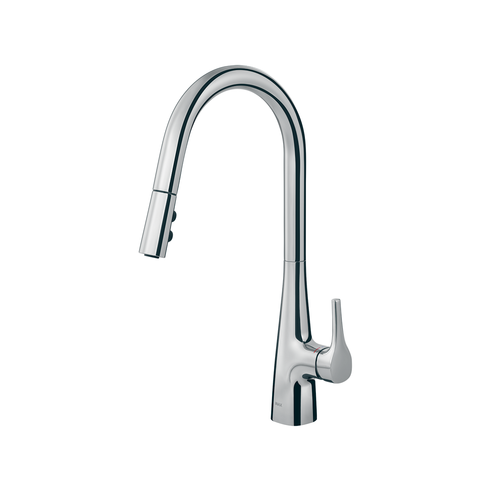
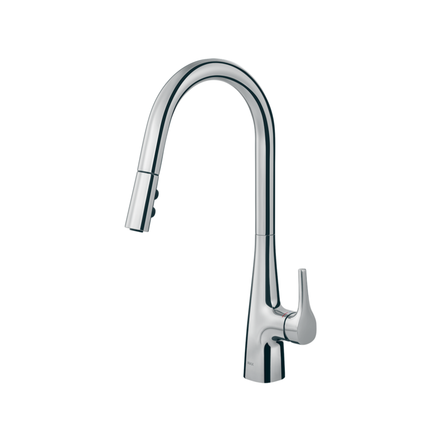
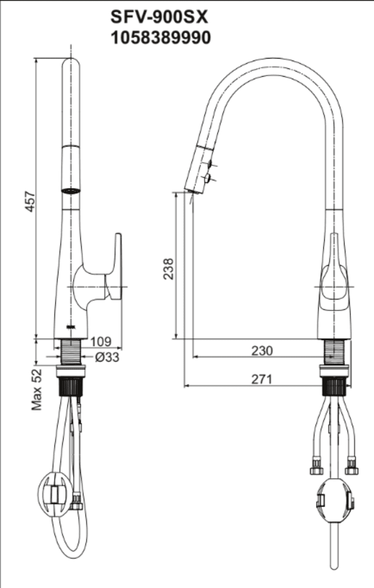

Vòi bếp SFV-900SX là dòng sản phẩm cao cấp, đại diện cho sự kết hợp hoàn mỹ giữa công năng thông minh và ngôn ngữ thiết kế hiện đại. Với cấu trúc dây rút linh hoạt cùng hàng loạt công nghệ tiết kiệm năng lượng, SFV-900SX không chỉ là trợ thủ đắc lực trong việc nội trợ mà còn là điểm nhấn sang trọng, nâng tầm đẳng cấp cho không gian bếp gia đình.Ưu điểm của vòi chậu rửa bếp SFV-900SXThiết kế cổ ngỗng sang trọng, tối ưu không gianVòi bếp SFV-900SX gây ấn tượng mạnh với thiết kế vòi dạng cổ ngỗng, tạo hình vòng cung lớn và cao. Lối thiết kế này không chỉ mang lại dáng vẻ thanh thoát, nghệ thuật mà còn giúp tăng đáng kể khoảng cách từ đầu vòi đến mặt chậu rửa, tạo không gian thao tác rộng rãi cho việc rửa các loại nồi niêu, xoong chảo kích thước lớn hoặc đồ dùng cồng kềnh một cách dễ dàng.Toàn bộ thân vòi được bao phủ bởi lớp mạ Crom/Niken sáng bóng, có khả năng chống hoen gỉ và duy trì vẻ đẹp tinh khôi suốt thời gian dài sử dụng.Đầu vòi kéo rút và xoay linh hoạtĐầu vòi có thể kéo ra khỏi vị trí cố định, cho phép người dùng đưa dòng nước đến những vị trí xa hoặc các góc khuất trong chậu rửa mà vòi thông thường không thể với tới.Sự kết hợp giữa khả năng xoay toàn diện và dây rút giúp việc làm sạch các bồn rửa chén đôi hay vệ sinh toàn bộ bề mặt chậu trở nên vô cùng thuận tiện.Đầu vòi bếp SFV-900SX tích hợp hai chế độ phun nước riêng biệt: chế độ phun bọt nhẹ nhàng giúp rửa rau củ không bị văng bắn và chế độ phun tia mạnh mẽ để đánh bay các vết dầu mỡ cứng đầu trên bát đĩa.Công nghệ vận hành thông minh, tiết kiệmINAX đã tích hợp vào sản phẩm những công nghệ vận hành bền bỉ và thân thiện với môi trường, bao gồm:Cold Start: Đây là tính năng ưu việt giúp tránh việc lãng phí năng lượng không cần thiết. Khi mở nước ở vị trí trung tâm, vòi sẽ ưu tiên cung cấp nước lạnh thay vì kích hoạt bình nóng lạnh ngay lập tức, giúp tiết kiệm điện/ga cho gia đình.Lõi van sứ mượt mà: Van điều khiển bằng sứ có độ bền cực cao, giúp tay cầm hoạt động trơn tru, chính xác và triệt tiêu hoàn toàn nỗi lo rò rỉ nước sau nhiều năm sử dụng.Hệ thống lắp đặt Quick Fix: Hệ thống bộ gá lắp nhanh giúp việc kết nối vòi vào chậu rửa trở nên đơn giản, nhanh chóng, tiết kiệm thời gian và chi phí lắp đặt.Video giới thiệu về vòi bếp INAXBản vẽ Vòi bếp SFV-900SXTài liệu Hướng dẫn lắp đặt vòi bếp SFV-900SXThông số kỹ thuậtMã sản phẩmSFV-900SXLoại vòiVòi rửa chén nóng lạnh dây rútThương hiệuINAXKiểu dángVòi cổ ngỗng thân cao sang trọng, tối ưu không gian thao tác tại chậu rửaChất liệuThân vòi bằng Đồng thau mạ Crom/Niken cao cấp, kết cấu bền vững, chống ăn mòn và giữ bề mặt luôn sáng bóng thời thượngChế độ nước2 chế độ Nóng và Lạnh tiện lợi, đáp ứng nhu cầu sử dụng đa dạng trong bốn mùaThiết kế đầu vòi- Tích hợp 2 chế độ phun linh hoạt (phun mưa diện rộng và phun dòng áp lực) - Dây rút kéo dài linh hoạt: Dễ dàng kéo kéo đầu vòi ra xa để vệ sinh xung quanh thành chậu - Xoay 360°: Tiện lợi khi sử dụng cho các dòng chậu rửa bát đôiCông nghệ nổi bật- Quick Fix: Công nghệ lắp đặt nhanh chóng, dễ dàng và cố định vững chắc vào chậu rửa - Van lõi sứ cao cấp: Kiểm soát dòng nước mượt mà, ngăn ngừa rò rỉ và có độ bền bỉ vượt thời gianMàu sắcCrom sáng bóng, dễ lau chùi và hạn chế bám bẩnKhác- Hotline tư vấn và bảo hành chính hãng: 18006633
Vòi bếp SFV-900SX
Vòi bếp thương hiệu INAX.
Đã cập nhật danh sách yêu thích.
DANH MỤC: Vòi bếp
MÃ SẢN PHẨM: SFV-900SX
DEPTH: mm
HEIGHT: mm
WIDTH: mm
Vòi bếp SFV-900SX là dòng sản phẩm cao cấp, đại diện cho sự kết hợp hoàn mỹ giữa công năng thông minh và ngôn ngữ thiết kế hiện đại. Với cấu trúc dây rút linh hoạt cùng hàng loạt công nghệ tiết kiệm năng lượng, SFV-900SX không chỉ là trợ thủ đắc lực trong việc nội trợ mà còn là điểm nhấn sang trọng, nâng tầm đẳng cấp cho không gian bếp gia đình.Ưu điểm của vòi chậu rửa bếp SFV-900SXThiết kế cổ ngỗng sang trọng, tối ưu không gianVòi bếp SFV-900SX gây ấn tượng mạnh với thiết kế vòi dạng cổ ngỗng, tạo hình vòng cung lớn và cao. Lối thiết kế này không chỉ mang lại dáng vẻ thanh thoát, nghệ thuật mà còn giúp tăng đáng kể khoảng cách từ đầu vòi đến mặt chậu rửa, tạo không gian thao tác rộng rãi cho việc rửa các loại nồi niêu, xoong chảo kích thước lớn hoặc đồ dùng cồng kềnh một cách dễ dàng.Toàn bộ thân vòi được bao phủ bởi lớp mạ Crom/Niken sáng bóng, có khả năng chống hoen gỉ và duy trì vẻ đẹp tinh khôi suốt thời gian dài sử dụng.Đầu vòi kéo rút và xoay linh hoạtĐầu vòi có thể kéo ra khỏi vị trí cố định, cho phép người dùng đưa dòng nước đến những vị trí xa hoặc các góc khuất trong chậu rửa mà vòi thông thường không thể với tới.Sự kết hợp giữa khả năng xoay toàn diện và dây rút giúp việc làm sạch các bồn rửa chén đôi hay vệ sinh toàn bộ bề mặt chậu trở nên vô cùng thuận tiện.Đầu vòi bếp SFV-900SX tích hợp hai chế độ phun nước riêng biệt: chế độ phun bọt nhẹ nhàng giúp rửa rau củ không bị văng bắn và chế độ phun tia mạnh mẽ để đánh bay các vết dầu mỡ cứng đầu trên bát đĩa.Công nghệ vận hành thông minh, tiết kiệmINAX đã tích hợp vào sản phẩm những công nghệ vận hành bền bỉ và thân thiện với môi trường, bao gồm:Cold Start: Đây là tính năng ưu việt giúp tránh việc lãng phí năng lượng không cần thiết. Khi mở nước ở vị trí trung tâm, vòi sẽ ưu tiên cung cấp nước lạnh thay vì kích hoạt bình nóng lạnh ngay lập tức, giúp tiết kiệm điện/ga cho gia đình.Lõi van sứ mượt mà: Van điều khiển bằng sứ có độ bền cực cao, giúp tay cầm hoạt động trơn tru, chính xác và triệt tiêu hoàn toàn nỗi lo rò rỉ nước sau nhiều năm sử dụng.Hệ thống lắp đặt Quick Fix: Hệ thống bộ gá lắp nhanh giúp việc kết nối vòi vào chậu rửa trở nên đơn giản, nhanh chóng, tiết kiệm thời gian và chi phí lắp đặt.Video giới thiệu về vòi bếp INAXBản vẽ Vòi bếp SFV-900SXTài liệu Hướng dẫn lắp đặt vòi bếp SFV-900SXThông số kỹ thuậtMã sản phẩmSFV-900SXLoại vòiVòi rửa chén nóng lạnh dây rútThương hiệuINAXKiểu dángVòi cổ ngỗng thân cao sang trọng, tối ưu không gian thao tác tại chậu rửaChất liệuThân vòi bằng Đồng thau mạ Crom/Niken cao cấp, kết cấu bền vững, chống ăn mòn và giữ bề mặt luôn sáng bóng thời thượngChế độ nước2 chế độ Nóng và Lạnh tiện lợi, đáp ứng nhu cầu sử dụng đa dạng trong bốn mùaThiết kế đầu vòi- Tích hợp 2 chế độ phun linh hoạt (phun mưa diện rộng và phun dòng áp lực) - Dây rút kéo dài linh hoạt: Dễ dàng kéo kéo đầu vòi ra xa để vệ sinh xung quanh thành chậu - Xoay 360°: Tiện lợi khi sử dụng cho các dòng chậu rửa bát đôiCông nghệ nổi bật- Quick Fix: Công nghệ lắp đặt nhanh chóng, dễ dàng và cố định vững chắc vào chậu rửa - Van lõi sứ cao cấp: Kiểm soát dòng nước mượt mà, ngăn ngừa rò rỉ và có độ bền bỉ vượt thời gianMàu sắcCrom sáng bóng, dễ lau chùi và hạn chế bám bẩnKhác- Hotline tư vấn và bảo hành chính hãng: 18006633
DANH MỤC: Vòi bếp
MÃ SẢN PHẨM: SFV-900SX
DEPTH: mm
HEIGHT: mm
WIDTH: mm